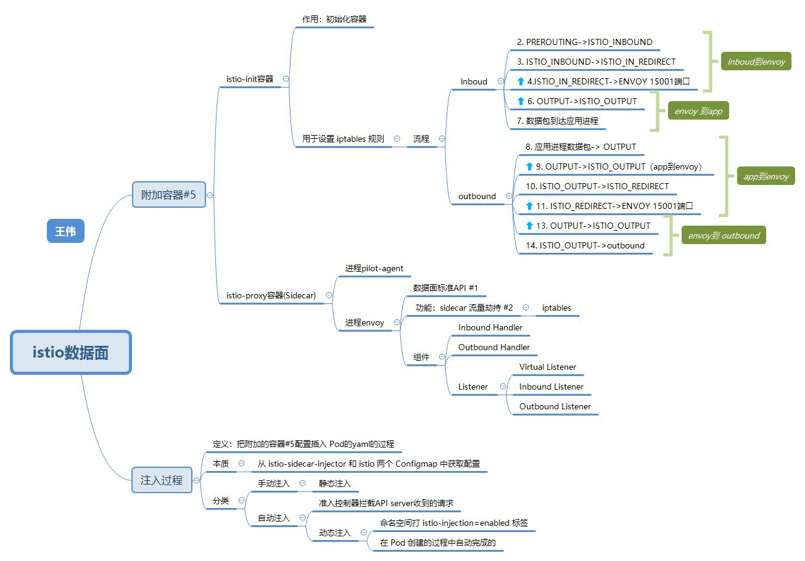
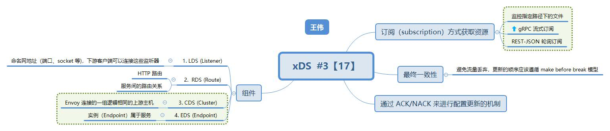

sidecar注入和路由转发 #
sidecar注入 #

Envoy Sidecar 代理的路由转发 [7][8] #
 Envoy Sidecar 代理的路由转发
Envoy Sidecar 代理的路由转发
参考:
7. 理解 Istio Service Mesh 中 Envoy 代理 Sidecar 注入及流量劫持 宋净超
8. 理解 Istio Service Mesh 中 Envoy Sidecar 代理的路由转发 宋净超 引
21. 《云原生服务网格Istio：原理、实践、架构与源码解析》 第6章
22. Istio Sidecar 注入过程解密 istio官方
Envoy proxy的架构 [18] #

Envoy proxy的架构
参考:
18. Istio 的数据平面 Envoy Proxy 配置详解 宋净超 引
数据面标准API/xDS协议 #

- pilot和envoy之间的接口
- xDS是一类发现服务的总称，包含LDS，RDS，CDS，EDS以及 SDS。
- XDS服务接口的最终一致性: 遵循 make before break 模型

参考:
17. xDS 协议解析 宋净超 引
数据面 #
Istio 注入sidecar实现 #
- 自动注入: 利用 Kubernetes Dynamic Admission Webhooks 对 新建的pod 进行注入: init container + sidecar
一种灵活注入 Istio Sidecar 的方案探索 - 手动注入: 使用 istioctl kube-inject
注入Pod内容 #
- istio-init:
通过配置iptables来劫持Pod中的流量。
Init 容器初始化完毕后就会自动终止，但是 Init 容器初始化结果(iptables)会保留到应用容器和 Sidecar 容器中. - istio-proxy:
两个进程pilot-agent和envoy, pilot-agent 进行初始化并启动envoy. 【3.2节】
Envoy启动过程和配置 #

Envoy启动过程和配置
Envoy 配置热更新: 配置的动态变更，而不需要重启 Envoy.
参考:
Istio 庖丁解牛1：组件概览 腾讯云 钟华
istio数据面 self
性能优化 [2] #
Proxyless 模式 (v1.11) #
使用 eBPF 优化流量劫持 #
参考